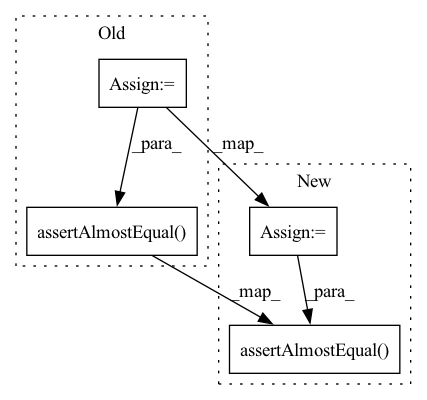

Pattern ID :4955
Before Change
for w in ["weight", "bias"]:
out_old = layer(input_)
getattr(layer.parametrizations, w).update_base()
out_new = layer(input_)
self.assertAlmostEqual(
(out_old - out_new).abs().max().item(), 0.0, places=5
)
def test_construction(self):
// Negative curvature
with self.assertRaises(ValueError):After Change
with torch.no_grad():
out_old = layer(input_)
getattr(layer.parametrizations, w).update_base()
out_new = layer(input_)
self.assertAlmostEqual(
(out_old - out_new).abs().max().item(),
0.0,
places=5,
)
def test_construction(self):
// Negative curvature
with self.assertRaises(ValueError):In pattern: SUPERPATTERN
Frequency: 4
Non-data size: 4
Instances Fragment ID: 17385832
Project Name: lezcano/geotorch
Commit Name: 994636043965426f8222f5183e2eeb98d37d17c7
Time: 2020-08-14
Author: lezcano-93@hotmail.com
File Name: test/test_sphere.py
M Class Name: TestSphere
N Class Name: TestSphere
M Method Name: test_backprop(1)
N Method Name: test_backprop(1)
M Parent Class: TestCase
N Parent Class: TestCase
M File Name: test/test_sphere.py
N File Name: test/test_sphere.py
M Start Line: 46
M End Line: 65
N Start Line: 30
N End Line: 73
Before Change
"Reshape": {"config": {"target_shape": (outs, 1)}}
}
prediction = make_and_run(model=Model, layers=lyrs, batch_size=batch_size, batches_per_epoch=5)
self.assertAlmostEqual( float(prediction.sum()), 474.3257980449273, 4)
def test_SeqWeightedAttention(self):
// SeqWeightedAttention
lyrs = {After Change
"Reshape": {"config": {"target_shape": (outs, 1)}}
}
if int("".join(tf.__version__.split(".")[0:2])) <= 23:
prediction = make_and_run(model=Model, layers=lyrs, batch_size=batch_size, batches_per_epoch=5)
self.assertAlmostEqual( float(prediction.sum()), 474.3257980449273, 4)
else:
pass
def test_SeqWeightedAttention(self): Fragment ID: 17385836
Project Name: atrcheema/ai4water
Commit Name: bee37db6a5b25f03d31ce587856f1b4767b6d065
Time: 2021-01-31
Author: ather_abbas786@yahoo.com
File Name: tests/test_models.py
M Class Name: TestModels
N Class Name: TestModels
M Method Name: test_SeqSelfAttention(1)
N Method Name: test_SeqSelfAttention(1)
M Parent Class: unittest.TestCase
N Parent Class: unittest.TestCase
M File Name: tests/test_models.py
N File Name: tests/test_models.py
M Start Line: 128
M End Line: 129
N Start Line: 127
N End Line: 133
Before Change
"Dense": {"config": {"units": outs}},
"Reshape": {"config": {"target_shape": (outs, 1)}}
}
prediction = make_and_run(Model, layers=lyrs)
self.assertAlmostEqual( float(prediction.sum()), 935.47619, 2) // TODO failing with higher precision
def test_NBeats(self):After Change
}
try:
import tcn
prediction = make_and_run(Model, layers=lyrs)
self.assertAlmostEqual( float(prediction.sum()), 935.47619, 2) // TODO failing with higher precision
except:
ModuleNotFoundError("tcn based model can not be tested as it is not found.")
Fragment ID: 17385839
Project Name: atrcheema/dl4seq
Commit Name: 1e9527422277f8781faf2137ff958b936cd36e58
Time: 2020-11-30
Author: ather_abbas786@yahoo.com
File Name: tests/test_models.py
M Class Name: TestModels
N Class Name: TestModels
M Method Name: test_TCNModel(1)
N Method Name: test_TCNModel(1)
M Parent Class: unittest.TestCase
N Parent Class: unittest.TestCase
M File Name: tests/test_models.py
N File Name: tests/test_models.py
M Start Line: 287
M End Line: 288
N Start Line: 287
N End Line: 294